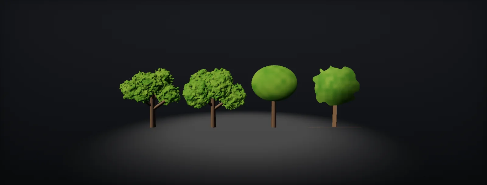

Foliage LODs, Impostors and Budgets
LOD chains for trees, how the number of LODs changes draws and batches, transitions with cross-fades, billboards, octahedral impostors, voxels and Nanite Foliage, and how to set and check foliage budgets, built in Unity HDRP and Unreal.

An LOD chain for a tree
A tree's LODs remove detail in the order it stops being visible: thin branches and individual leaves first, then branch levels, until only the crown's shape is left as a picture. Each level typically keeps 40–60 % of the previous one's triangles and switches by screen size, not distance (LODs and screen size):
| Level | Geometry | Shading and animation |
|---|---|---|
| LOD0 | All modelled branch levels, individual twig cards or leaf meshes | Full material, all wind layers, shadows |
| LOD1 | Thin branches removed, fewer sides and segments, cards merged into larger clusters | No leaf flutter |
| LOD2 | Trunk and main branches only, large cluster cards for the crown | Main bend only; simple or proxy shadows |
| Last | Billboard or impostor (2–8 triangles) | No wind or a sway of the whole card; baked lighting terms |
Shading and animation drop with the geometry. A far LOD with full flutter, translucency and a detailed normal map pays for detail nobody sees, in every pass. SpeedTree and the Houdini tree tools generate the chain from the same structure, which keeps the silhouettes of the levels close and the switches quiet.
More LODs or fewer: draw calls and batches
"More LODs mean more draw calls" is true only for part of the picture. Drawn one object at a time, a tree draws exactly one LOD per pass, so the number of draws does not depend on how many LODs exist. Instanced, every LOD level that is visible somewhere becomes its own batch, per material and pass, because a batch is one mesh with one material:
The trade-off: more levels give a smoother triangle falloff and smaller pops, but add batches per pass with instancing, add mesh memory, and multiply the work of authoring and checking. Cross-fades draw two LODs for every instance in a transition band. Most game trees use 3–4 mesh LODs plus an impostor; grass uses 1–2 and fades out. GPU-driven renderers (Nanite, the GPU Resident Drawer, indirect drawing) reduce the CPU side of batches, not the GPU cost of each one.
Transitions: pops, cross-fades and dithering
An LOD switch is visible when the shape change, projected to the screen, is larger than a pixel or two:
Cross-fading hides the rest: both LODs are drawn for a short band, with complementary dither patterns that TAA smooths into a fade (dithered transparency). SpeedTree also offers smooth LOD, which morphs vertices of one level toward the next. Add hysteresis (switch back at a slightly different distance) so a tree at the threshold does not flicker, and keep the fade band short, since it doubles the cost of the instances inside it.
Billboards
The classic last LOD is a billboard: one or a few quads with pictures of the tree. A camera-facing quad with one picture is the cheapest; a set of views around the tree (often eight) picks the one closest to the camera direction:
Billboards fail from above and pop between views. Crossed quads (two or three quads through the trunk) avoid the camera-facing rotation but show their edges. Both are fine for grass and small plants, and for trees that are only ever seen at eye level.
Octahedral impostors
An captures the tree from many directions on a hemisphere (or a full sphere) and stores the pictures in one texture. The direction to the camera is mapped to a 2D grid with an octahedral mapping, the shader blends the three nearest frames on a single quad, and depth stored with the colour lets it add parallax and correct depth:
Ryan Brucks' impostor baker for Unreal (now a plugin) made the technique standard; Epic uses 12 × 12 frames at 2048² for most distant foliage in Fortnite, upper hemisphere for trees on terrain. Amplify Impostors does the same for Unity. Impostors usually bake base colour and normals (plus depth and other channels as needed), so they relight with the scene, and they cost one quad of geometry and a heavier pixel shader than a billboard.
Voxels and Nanite Foliage
At a distance, a leaf covers less than a pixel. Triangles or cards for individual leaves then only alias and waste rasteriser work; what is visible is the crown's coverage and average colour:
Impostors handle that with pictures. Unreal 5.7 introduced another answer in its experimental Nanite Foliage: Nanite Voxels switch distant clusters from triangles to voxels when that gives a lower error, keeping the silhouette, the animation and a distribution of normals for shading, so distant trees keep their volume without billboards or LOD meshes. Together with Nanite Assemblies (a tree built from instanced parts) and Nanite Skinning (wind through bones, skinned foliage) it is aimed at dense, fully modelled forests.
As of Unreal 5.8 the whole system is experimental. Unity has no built-in equivalent; there, impostors remain the standard last LOD. The idea behind voxels, representing many sub-pixel elements by their aggregate density and orientation, is also how volumetric clouds and hair at a distance are shaded.
Budgets
A foliage budget starts from what is visible at once, not from single assets. Density, draw distance and the average cost per instance after LODs decide the total:
| Item | Ballpark for a current-generation PC or console game | Check with |
|---|---|---|
| GPU time for all foliage (main view, prepass, shadows) | a few milliseconds of a 16.7 ms frame | GPU profiler, passes grouped by foliage materials |
| Hero tree LOD0 | tens of thousands of triangles; far LODs a few hundred; impostor 2–8 | Import report per LOD |
| Grass clump | tens to a few hundred triangles; no shadows | Mesh statistics |
| Foliage batches | species × LOD levels × materials × passes; a few hundred at most | Frame Debugger, RenderDoc |
| Overdraw on crowns | a handful of shaded layers in the worst view | Quad overdraw view |
| Texture memory per species | one leaf atlas set and shared bark | Memory profiler |
The numbers vary by platform and genre; treat the table as a starting point and set your own from a profiled worst-case view: a dense forest at the target resolution, sun low enough that all cascades are full. Then give each asset type its share and check new assets against it on import (import report).
Build it in Unity HDRP
The route configures LOD Groups with cross-fades and a quality-dependent bias, reports each tree's chain against the budget, and adds an octahedral impostor as the last level, baked with an impostor tool and drawn with a small helper file. Written for Unity 6 with HDRP 17; Unity 2022 LTS works the same apart from a few renamed menu entries.
- On each tree prefab's LOD Group set Fade Mode to Cross Fade and enable Animate Cross-fading (a time-based fade, independent of how fast the camera moves). In the foliage Shader Graph enable Support LOD CrossFade in the Graph Settings, and keep LOD Cross Fade on in HDRP's Frame Settings. If you use the GPU Resident Drawer, check that animated cross-fades work in your Unity version; there have been issues with that combination.
- Set the transition heights from the budget: put
LODReport.csinAssets/Editor, select the trees and run Tools > Foliage > LOD Report. Levels that keep more than about 65 % of the previous one are flagged; material counts show where an LOD still uses two materials when one would do. - Scale for quality: Project Settings > Quality > LOD Bias per quality level, or per camera in HDRP Frame Settings > LOD Bias Mode and Maximum LOD Level (for example a lower bias for reflection probes and planar reflections).
- Impostor: bake the last LOD with an impostor tool (Amplify Impostors: Octahedral or Hemi-Octahedral, 12 × 12 frames at 2048 for trees, colour and normal and depth). Use the tool's shader, or build your own Unlit or Lit graph with
OctaImpostor.hlsl: In the graph, add a Custom Function node. Set Type toFile, Source toOctaImpostor.hlsland Name toOctaFrames(without the_floatsuffix). Add the inputs ViewDirOS (Vector 3), QuadUV (Vector 2), Frames (Float) and the outputs UV0 (Vector 2), UV1 (Vector 2), UV2 (Vector 2), UV3 (Vector 2), Weights (Vector 4), in that order and with those types: they must match the function's parameters. Sample the impostor textures four times and blend with the weights;OctaBillboardturns the quad toward the camera in the vertex stage. - Put the impostor in the last LOD slot and disable shadow casting on it, or let it cast as a simple shadow-only quad. Cull the tree completely at the distance where it is smaller than a few pixels (Culled threshold of the LOD Group).
// Assets/Editor/LODReport.cs: select prefabs or scene objects with LOD Groups, then Tools > Foliage > LOD Report.
// Lists triangles, materials and transition heights per level, and flags levels that keep too much.
using System.Linq;
using System.Text;
using UnityEditor;
using UnityEngine;
public static class LODReport
{
const float MaxKeep = 0.65f; // a level should keep at most ~65 % of the previous level's triangles
[MenuItem("Tools/Foliage/LOD Report")]
static void Run()
{
var sb = new StringBuilder();
foreach (var go in Selection.gameObjects)
foreach (var g in go.GetComponentsInChildren<LODGroup>(true))
{
var lods = g.GetLODs();
sb.AppendLine($"{g.name}: {lods.Length} levels, fade {g.fadeMode}, animate cross-fade {g.animateCrossFading}");
long prev = -1;
for (int i = 0; i < lods.Length; i++)
{
var rs = lods[i].renderers.Where(r => r != null).ToArray();
long tris = rs.Select(r => r.GetComponent<MeshFilter>()?.sharedMesh).Where(m => m != null).Sum(m => (long)m.triangles.Length / 3);
int mats = rs.SelectMany(r => r.sharedMaterials).Where(m => m != null).Distinct().Count();
string flag = prev > 0 && tris > prev * MaxKeep ? " <- keeps more than 65 % of the previous level" : "";
sb.AppendLine($" LOD{i}: {tris} tris, {mats} materials, switches below {lods[i].screenRelativeTransitionHeight * 100f:0.#} % screen height{flag}");
prev = tris;
}
}
Debug.Log(sb.Length > 0 ? sb.ToString() : "Select objects with LOD Groups.");
}
}#ifndef ATLAS_OCTA_IMPOSTOR_INCLUDED
#define ATLAS_OCTA_IMPOSTOR_INCLUDED
// Hemi-octahedral impostor helpers (Y up, object space). Frames x Frames views of the upper hemisphere;
// frame (i, j) is the view from Atlas_HemiOctDecode(float2(i, j) / (Frames - 1)), so the grid's border frames
// sit on the horizon. Bakers differ (some use (i + 0.5) / Frames): match the convention of the tool you bake with.
float2 Atlas_HemiOctEncode(float3 d) // direction -> 0..1
{
d.y = max(d.y, 0.0);
d /= (abs(d.x) + abs(d.y) + abs(d.z));
return float2(d.x + d.z, d.x - d.z) * 0.5 + 0.5;
}
float3 Atlas_HemiOctDecode(float2 uv) // 0..1 -> direction
{
float2 a = uv * 2.0 - 1.0;
float3 d = float3((a.x + a.y) * 0.5, 0.0, (a.x - a.y) * 0.5);
d.y = 1.0 - abs(d.x) - abs(d.z);
return normalize(d);
}
// Vertex stage: turn the impostor quad (QuadUV 0..1, size Size) to face the camera direction ViewDirOS.
void OctaBillboard_float(float2 QuadUV, float Size, float3 ViewDirOS, out float3 PositionOS)
{
float3 f = normalize(ViewDirOS);
float3 r = normalize(cross(float3(0, 1, 0), f) + float3(1e-5, 0, 0));
float3 u = cross(f, r);
float2 q = (QuadUV - 0.5) * Size;
PositionOS = r * q.x + u * q.y + float3(0, Size * 0.5, 0);
}
// Pixel stage: the four frames around the view direction and their bilinear weights.
// Sample the impostor texture at UV0..UV3 and blend with Weights (x, y, z, w).
void OctaFrames_float(float3 ViewDirOS, float2 QuadUV, float Frames,
out float2 UV0, out float2 UV1, out float2 UV2, out float2 UV3, out float4 Weights)
{
float2 g = Atlas_HemiOctEncode(normalize(ViewDirOS)) * (Frames - 1.0); // frame centres at integer positions
float2 f0 = floor(g), t = g - f0;
float2 f1 = min(f0 + 1.0, Frames - 1.0);
float inv = 1.0 / Frames;
UV0 = (float2(f0.x, f0.y) + QuadUV) * inv;
UV1 = (float2(f1.x, f0.y) + QuadUV) * inv;
UV2 = (float2(f0.x, f1.y) + QuadUV) * inv;
UV3 = (float2(f1.x, f1.y) + QuadUV) * inv;
Weights = float4((1 - t.x) * (1 - t.y), t.x * (1 - t.y), (1 - t.x) * t.y, t.x * t.y);
}
#endifFour-frame bilinear blending is the simplest smooth version; Epic's impostor material blends the three nearest frames on the octahedron and adds parallax from the baked depth, which looks better from more angles.
Build it in Unreal Engine
Unreal generates and switches LODs per static mesh, bakes impostors with the Impostor Baker plugin, and for Nanite projects offers Nanite Foliage, which replaces the LOD chain entirely. Written for Unreal Engine 5.6 and later. Substrate is production-ready from 5.7; check Project Settings > Rendering > Substrate to see which material model a project uses.
- In the static mesh editor, LOD Settings: import the LODs from SpeedTree or Houdini, or use Number of LODs with reduction settings for quick tests. Set Screen Size per LOD from the budget; LOD Group presets (Foliage, HighDetail, …) give consistent defaults across meshes.
- Cross-fading: Unreal dithers between LODs for materials with Dithered LOD Transition enabled; turn it on in the foliage material.
- Impostor: enable the Impostor Baker plugin, open its map, choose Upper Hemisphere, FramesXY 12, resolution 2048, and bake BaseColor, Normal and the packed depth or opacity. Add the generated impostor as the last LOD (or as the mesh of a distant foliage type).
- Foliage types and HISM components: set Cull Distance (start and end) so plants fade out and disappear at distance; grass types use short distances. Scalability settings (
foliage.LODDistanceScale,foliage.DensityScalein the scalability groups) scale them per quality level. - Nanite projects: modelled, opaque trees can use Nanite instead of a hand-made chain. The experimental Nanite Foliage (5.7+) adds Voxels for distant clusters (Nanite Settings > Shape Preservation > Voxelize per mesh after enabling it in Project Settings). Validate performance on target hardware first.
Sources and further reading
The formulas and engine details in this unit come from these references. Engine documentation changes between versions.
- DocsImpostor Baker pluginEpic GamesFull and upper-hemisphere impostors, billboards, frame counts, Fortnite settings.
- ArticleImpostor Baker for UE480 Level · Ryan BrucksThe octahedral impostor technique as introduced.
- DocsNanite FoliageEpic GamesNanite Voxels, Assemblies and Skinning; experimental status.
- ToolAmplify ImpostorsAmplify CreationsOctahedral impostors for Unity.
- DocsLOD Group and LOD transitionsUnityCross-fade and fade modes in Unity 6.
- DocsSpeedTree Modeler: level of detailUnityLOD generation and smooth LOD.